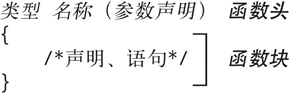

首页 > 编程笔记
什么是函数？以及函数的定义
对于一个 C 程序而言，它所有的命令都包含在函数内。每个函数都会执行特定的任务。有一个特别的函数，名称为 main（）——该函数是程序启动后，第一个执行的函数。其他所有函数都是 main（）函数的子函数（或者与之相关联的过程，例如回调函数），并且它们的函数名称可以自己设定。
每个函数都只能被定义一次。但一个函数可以根据需要被多次的声明和调用。
函数的定义包含一个函数头（function head，或称为声明符（declarator））和一个函数块。函数头指定了函数的名称、返回值的类型以及参数的类型和名称（如果有参数的话）。函数块中的语句明确了该函数要做的事。函数定义的一般格式如下所示：
在上述格式的函数头中，“名称”指函数名，而“类型”包含至少一个类型修饰符，用来定义函数返回值的类型。返回值的类型可以是 void 或者任何对象类型，但不可以是数组类型。而且，类型部分还可以包含函数修饰符 inline 或 _Noreturn，以及存储类修饰符 extern 和 static。
函数无法返回函数或数组。然而，可以定义一个函数的返回值为指针，并将该指针指向一个函数或数组。
在上述格式中，“参数声明”是一个以逗号分隔、由函数参数声明组成的列表。如果该函数没有参数需要传入，则这个列表为空，或者仅有关键字 void。
函数类型不仅指定了其返回值的类型，也指定了其所有参数的类型。例 1 是一个简单的函数，用来计算圆柱体的体积。
【例1】函数 cylinderVolume（）
该函数的名称为 cylinderVolume，并且有两个参数，分别是 r 和 h，它们都是 double 类型。该函数的返回值是 double 类型。
每个函数都只能被定义一次。但一个函数可以根据需要被多次的声明和调用。
函数的定义包含一个函数头（function head，或称为声明符（declarator））和一个函数块。函数头指定了函数的名称、返回值的类型以及参数的类型和名称（如果有参数的话）。函数块中的语句明确了该函数要做的事。函数定义的一般格式如下所示：

在上述格式的函数头中，“名称”指函数名，而“类型”包含至少一个类型修饰符，用来定义函数返回值的类型。返回值的类型可以是 void 或者任何对象类型，但不可以是数组类型。而且，类型部分还可以包含函数修饰符 inline 或 _Noreturn，以及存储类修饰符 extern 和 static。
函数无法返回函数或数组。然而，可以定义一个函数的返回值为指针，并将该指针指向一个函数或数组。
在上述格式中，“参数声明”是一个以逗号分隔、由函数参数声明组成的列表。如果该函数没有参数需要传入，则这个列表为空，或者仅有关键字 void。
函数类型不仅指定了其返回值的类型，也指定了其所有参数的类型。例 1 是一个简单的函数，用来计算圆柱体的体积。
【例1】函数 cylinderVolume（）
// 函数cylindeirVolume()用于计算圆柱体的体积
// 参数：截面圆的半径；圆柱体的高度
// 返回值：圆柱体的体积
extern double cylinderVolume( double r, double h )
{
const double pi = 3.1415926536; // pi是一个常量
return pi * r * r * h;
}
该函数的名称为 cylinderVolume，并且有两个参数，分别是 r 和 h，它们都是 double 类型。该函数的返回值是 double 类型。
关注公众号「站长严长生」，在手机上阅读所有教程，随时随地都能学习。内含一款搜索神器，免费下载全网书籍和视频。

微信扫码关注公众号